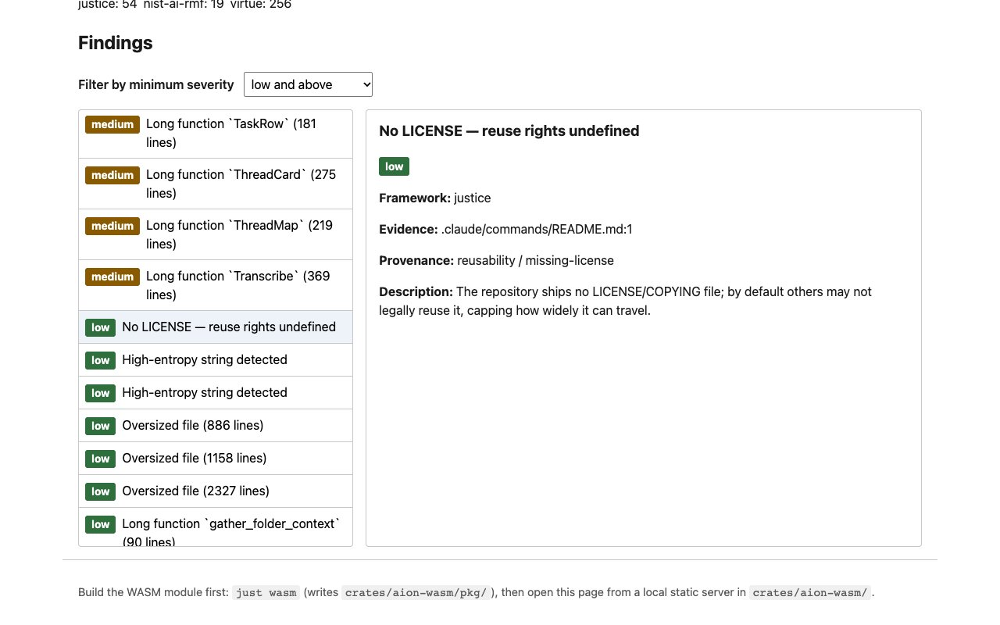

The Aion Apparatus
An instrument for examining the ethics of made things, which analyzes source code. You point aion at a piece of work and it writes an audit bundle, a directory in which every finding cites the evidence that triggered it, the rule that interpreted it, and the ethical framework under which it counts as a finding. A finding without all three is treated as a bug.

What a finding carries
Each finding names three things, so it can be defended or disputed.
- Evidence: the file and line span, plus a hash that resolves to the exact snippet the check looked at.
- Interpreter: which check and which rule produced it, so it can be replayed.
- Framework lens: which framework it belongs to, cited in the shape that framework declares (a NIST clause, a vMeme).
When a claim is about something missing (no license, no lint config), the finding records what was searched instead of pointing at an arbitrary file.
The bundle
The bundle is the primary output, and any readable report is a view of it. Everything except the manifest is content-addressed, so the same inputs produce a byte-identical bundle, and aion verify recomputes the hashes and replays the checks. aion diff lists the net-new findings between two bundles, and --fail-on high turns a run into a gate for a project's own build. A bundle can be opened in a static, server-free explorer in the browser, with a severity filter and the evidence, citation and provenance for each finding.
Capabilities before frameworks
The default voice is not any framework's vocabulary. The apparatus first asks what the code can do: findings add up to a vector of capabilities, and that vector puts pressure on named tensions such as transparency against exploitability. Frameworks read from that vector as interpretive overlays.
Frameworks, with their limits stated
Frameworks live in a registry, each with a source, a declared scope and declared limits; the apparatus does not invent its own. The registry includes consequentialist, deontological, virtue, care and justice ethics, a published taxonomy of harms, Datasheets for Datasets and Data Statements, and Spiral Dynamics and Integral (AQAL), which run only when opted into. A person can also bring a rubric of their own.
The refusals are part of the design:
- No single ethics score, because adding up frameworks without attribution is the opacity the instrument is meant to refuse.
- No hidden disagreement: when two frameworks judge the same evidence differently, both are recorded.
- No rubber stamp: a clean report means only that the current frameworks and checks found nothing within their stated scope.
Reproducible first
The checks themselves are deterministic and are the spine of the instrument. An optional written-reasoning pass is off by default, bounded by a budget, and every call it makes is logged and replayable, and the bundle's manifest declares whether it was used. Secrets found in the code are masked before they are written into a bundle.
source code, then datasets
a byte-reproducible audit bundle
Rust, with a browser explorer in WebAssembly
Apache 2.0 (code), CC BY 4.0 (framework texts)